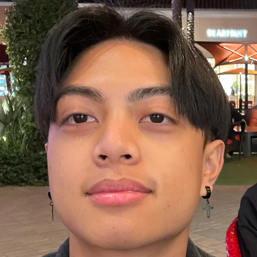

- 2025 TKH Fellowship Member - Web Development
- Teacher Extraordinaire
Personal Background
- Harrold Ventayen is from Arleta, California.
- He loves his hometown because it is a vastly diverse community filled with a several ethnicities.
- A fun and interesting fact about Harold is, that he was born in Florida and moved to California by car.
Interest & Hobbies
- Harrold enjoys thrift shopping for vintage clothes. His most recent treasure found is a, natural wonders tiger button up
- He likes plants and is currently taking care of a snake plant.
- His favorite show is “Adventure Time”.
- He teaches children coding as a way to give back and reinforce his skills.
Skills & Experience
- Harrold strengths are in front end, react.js. He can do css and database, but prefers databases over css.
- He works in react and also three.js when building websites.
- He finds 3D modeling cool and react to be efficient for routing and deciding when to load objects.
- He would like to improve his skills in databases.